1. Lecture Objectives
In this lecture, we introduce visualization-based techniques for interpreting deep neural networks. We examine why modern models are often difficult to interpret and how visualization methods can help translate internal representations into human-understandable insights. We study perturbation-based and gradient-based saliency methods, including Vanilla Backpropagation, Deconvnet, and Guided Backpropagation, and discuss how these techniques reveal which input regions influence a model’s prediction. We then introduce Grad-CAM, a method that produces class-discriminative and spatially meaningful explanations by leveraging gradients in the final convolutional layer. Together, these tools provide a foundation for understanding how neural networks make visual decisions.
2. Explainability
2.1 Definition
Explainability refers to the ability of a machine learning model to clearly describe, justify, or provide human-understandable reasons for its predictions or decisions. In other words, an explainable model allows a human user to understand why a particular output was produced for a given input.
Explainability helps bridge the gap between complex mathematical models and human interpretation by translating internal model behavior into meaningful insights that can be interpreted, trusted, and verified.
2.2 Why do we choose explainability
Explainability in deep learning systems is crucial for building trust, transparency, and accountability. Modern neural networks often achieve high predictive accuracy, but they typically operate as black-box models, meaning their internal reasoning is not directly interpretable.
Explainable models are particularly valuable in high-stakes domains such as healthcare, where they assist doctors in diagnosis and treatment decisions; seismic interpretation, where they help experts label and analyze geological data; and autonomous systems, where they increase safety and reliability by clarifying why specific actions are taken.
Without explainability, models simply map inputs to outputs (e.g., class scores) without providing insight into the reasoning behind those predictions. This lack of transparency limits adoption, debugging, and responsible deployment of machine learning systems.
2.3 Explainability in CNNs
We begin by examining a classical convolutional neural network (CNN) architecture, AlexNet. Understanding the structure of CNNs is important because many explainability techniques analyze how information flows through these layers and which layers contribute most to the final prediction.
2.3.0.1 A brief look at AlexNet
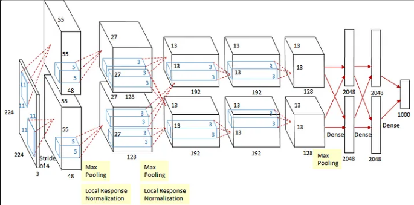
2.3.0.2
AlexNet contains eight learnable layers:
Input: \(227\times227\times3\) images. (The paper sometimes mentions \(224\times224\times3\); in practice this size is padded to 227 before the first convolution.)
1st Convolutional Layer: Two groups of 48 kernels of size \(11\times11\times3\) (stride 4, padding 0). Output: \(55\times55\times48\) feature maps per group. Followed by \(3\times3\) overlapping max pooling (stride 2) → \(27\times27\times48\). Then Local Response Normalization (LRN).
2nd Convolutional Layer: Two groups of 128 kernels of size \(5\times5\times48\) (stride 1, padding 2). Output: \(27\times27\times128\). Followed by \(3\times3\) overlapping max pooling → \(13\times13\times128\). Then Local Response Normalization.
3rd Convolutional Layer: Two groups of 192 kernels of size \(3\times3\times256\) (stride 1, padding 1). Output: \(13\times13\times192\).
4th Convolutional Layer: Two groups of 192 kernels of size \(3\times3\times192\) (stride 1, padding 1). Output: \(13\times13\times192\).
5th Convolutional Layer: 256 kernels of size \(3\times3\times192\) (stride 1, padding 1). Output: \(13\times13\times256\). Followed by \(3\times3\) overlapping max pooling → \(6\times6\times256\).
6th Fully Connected Layer: 4096 neurons.
7th Fully Connected Layer: 4096 neurons.
8th Fully Connected Layer: 1000 output neurons (ImageNet classes). Softmax is used for classification.
Key takeaway: AlexNet contains approximately 60 million parameters, highlighting the complexity of modern CNNs and motivating the need for explainability methods.
3. Visualizing CNNs
In convolutional neural networks (CNNs), filters can be viewed as learnable weight tensors that detect specific visual patterns from input images. Each filter spans the full depth of the input volume (e.g., 3 channels for RGB images) and produces an activation map indicating where that pattern is detected.
Visualizing these filters helps us understand what types of features the network learns at different layers, which is an important step toward explainability.
3.1 Visualizing Filters in First Layers
3.1.1 AlexNet
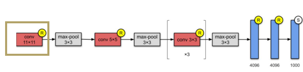
64 filters in the first convolutional layer.
Filter size: \(11 \times 11 \times 3\) (visualized as RGB images).
These filters typically detect low-level features such as oriented edges, color blobs, textures, and simple patterns.
3.1.2 ResNet
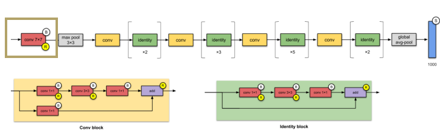
Uses deeper architectures with identity shortcuts and convolutional blocks to enable training of very deep networks.
First-layer filter size: \(7 \times 7 \times 3\) (visualized as RGB images).
64 filters in the first convolutional layer.
3.1.3 Summary
Despite architectural differences between AlexNet and ResNet, the filters learned in the first convolutional layers tend to capture very similar low-level visual patterns. These commonly include edge detectors, color transitions, and simple textures.
This consistency across architectures suggests that early layers learn generic visual primitives, while deeper layers progressively build more complex and class-specific representations.
3.2 Visualizing Filters in Intermediate Layers
As we move deeper into a CNN, the learned representations become increasingly abstract and harder to interpret directly. While first-layer filters often resemble simple edge or color detectors, intermediate layers combine these primitive features into more complex and semantically meaningful patterns.
3.2.1 Layer-specific Details
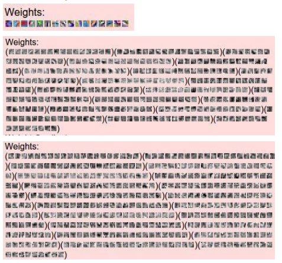
In the initial layers (e.g., Conv1), weights can be visualized as RGB images and are relatively interpretable, capturing basic structures such as edges, corners, and textures. In contrast, higher layers (e.g., Conv2 and Conv3) produce weights that appear as more abstract grayscale patterns. These filters represent increasingly complex combinations of lower-level features, making them less interpretable in raw form but more powerful in representation.
3.2.2 Activation Specificity in Conv5 Layer
Deeper convolutional layers begin to respond to object parts and higher-level semantic concepts rather than simple edges. For example, the fifth convolutional layer (Conv5) in networks such as AlexNet is particularly sensitive to specific object components, such as wheels. This selectivity is visualized through activation maps, which highlight spatial regions where a filter responds most strongly. These activation maps reveal which parts of the image contribute most to the network’s internal representation and ultimately influence the final prediction.
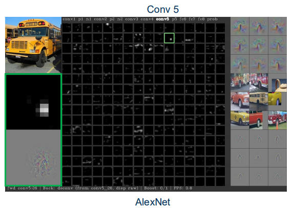
3.3 Maximally Activating Patches
Beyond visualizing intermediate activations, we can analyze which specific regions of input images cause the strongest responses in individual neurons. Maximally activating patches refer to image regions that trigger the highest activation values for a particular filter within a network. By identifying these regions, we gain insight into what visual patterns a neuron is most sensitive to and what semantic features it has learned to detect.
3.3.1 Procedure for Obtaining Maximally Activating Patches
To obtain maximally activating patches, we first select a specific layer and channel (for example, channel 17 in the Conv5 layer). We then pass a large collection of images through the network and record the activation values for that selected channel. Finally, we identify and extract the image regions corresponding to the highest activation values. Visualizing these patches reveals which patterns most strongly excite that neuron.
3.3.2 Characteristics of Maximally Activating Patches
Maximally activating patches often display consistent visual structures across different images. For instance, a particular neuron may respond strongly to faces, text, wheels, or other object parts. When visualized row-by-row (each row corresponding to a specific neuron), we typically observe that each neuron specializes in detecting a distinct category of visual patterns. This specialization highlights how deeper CNN layers develop structured and semantically meaningful feature representations.
3.4 Visualizing Last Layer Activations
The last layer activations of a CNN are high-dimensional feature vectors (e.g., 4096-dimensional in AlexNet) extracted just before the final classifier. These embeddings summarize the entire input image rather than localized patches, capturing the most abstract and semantically meaningful information learned by the network. Analyzing these representations helps us understand how the model organizes images in its learned feature space.
3.4.1 Purpose of Last Layer Visualizations
Images that produce similar last layer activations can be grouped together in the feature space. This similarity indicates that the network perceives them as sharing common semantic characteristics, even if their pixel-level appearance differs. Such grouping is useful for tasks like image retrieval, clustering, and measuring content similarity.
By examining these embeddings, we can also explore how different inputs activate the network in comparable ways, revealing which patterns or concepts the CNN considers related.
3.4.2 Operational Methodology
To visualize last layer activations, a large set of images is first passed through the network to extract their final-layer feature vectors. These embeddings are then analyzed—typically by grouping similar vectors or applying dimensionality reduction—to display images that occupy nearby positions in the learned feature space. This process provides a macro-level view of the network’s internal representation structure.
3.5 Visualizing Last Layer Activations via Dimensionality Reduction
3.5.1 Last Layer Embedding
The last layer embedding is a high-dimensional feature vector (e.g., 4096 dimensions in AlexNet) extracted just before the final classification layer. This vector summarizes the most important features of the image that the network uses to make its prediction. However, because humans cannot directly visualize thousands of dimensions, we require techniques that project these embeddings into lower-dimensional spaces.
3.5.2 Dimensionality Reduction for Visualization
To make these high-dimensional representations interpretable, dimensionality reduction techniques are applied. Common approaches include Principal Component Analysis (PCA), Isomap, Uniform Manifold Approximation and Projection (UMAP), and t-Distributed Stochastic Neighbor Embedding (t-SNE). These methods project the feature vectors from thousands of dimensions down to 2D or 3D, enabling visualization of the learned feature space where each point corresponds to one image.
3.5.3 Visualizing Feature Space
After dimensionality reduction, each image is represented as a point in a 2D or 3D space. Images that appear close together in this space have similar feature representations, meaning the CNN considers them semantically related. This visualization provides insight into how the network organizes and separates different classes internally.
3.5.4 Application Example with t-SNE
t-SNE is particularly effective for visualization because it preserves local neighborhood relationships. As a result, images that share similar visual features form clear clusters in the projected space. These clusters often correspond to semantic categories, making it easier to interpret the structure of the dataset and the behavior of the model.

3.6 Summary of Visualizing CNNs
3.6.1 Maximally Activating Patches
Maximally activating patches correspond to regions of input images that produce the strongest responses in specific filters. This visualization helps reveal the types of visual patterns each neuron has learned to detect and provides insight into feature specialization within the network.
3.6.2 Nearest Neighbor Images in Feature Space
By examining images that lie closest to one another in the learned feature space, we can understand how the network groups visually and semantically similar inputs. This reveals how the CNN organizes images based on learned representations rather than raw pixel similarity.
3.6.3 Last Layer Embeddings
Visualizing last layer embeddings shows how images are positioned relative to each other in the high-level feature space. This perspective is useful for tasks such as clustering, image retrieval, and anomaly detection, and provides a global view of the network’s learned representation structure.
Together, these visualization techniques provide complementary insights into how CNNs learn hierarchical features, organize visual information, and make predictions.
4. Saliency Methods
Saliency methods aim to identify which regions of an input image are most important for a model’s prediction. One intuitive and widely used approach is occlusion-based saliency, which measures how the prediction changes when parts of the image are deliberately hidden. By observing how the model’s confidence varies as different regions are masked, we can infer which areas are most influential for the decision.
4.1 Saliency via Occlusion
Occlusion-based saliency generates heatmaps that visualize how blocking portions of an image affects the predicted class probabilities. For example, when key regions of an image containing an elephant are occluded, the model’s confidence in predicting the class “elephant” drops significantly. This behavior reveals which spatial regions the network relies on most when forming its prediction.
This approach highlights the network’s sensitivity to specific visual regions. Rather than treating the image as a whole, the neural network focuses on particular structures that are strongly associated with the target class. The resulting heatmaps provide an intuitive and faithful explanation of the model’s decision-making process.
A major drawback of occlusion-based methods is their computational cost. To evaluate the importance of different regions, many occluded versions of the image must be processed by the network. For high-resolution images, this requires a large number of forward passes, making the method expensive in practice.
Connection to Feature Importance in Logistic Regression
The intuition behind saliency maps is closely related to feature importance in linear models such as logistic regression: \[P(y = 1|x) = \sigma(\mathbf{w}^T x + b), \qquad P(y = 0|x) = 1 - \sigma(\mathbf{w}^T x + b)\]
In logistic regression, each weight \(w_i\) represents the importance of feature \(x_i\) in determining the prediction. Large positive or negative weights indicate strong influence on the output probability. Similarly, saliency methods estimate how important each pixel region is to the CNN’s prediction.
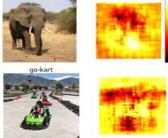
4.2 Saliency via Gradients
Gradient-based saliency provides a more efficient alternative to occlusion methods for estimating pixel importance. Instead of masking parts of the image repeatedly, we compute how sensitive the model’s prediction is to small changes in each input pixel. The resulting gradient-based saliency map highlights which pixels most strongly influence the output.
4.2.1 Non-linear Mapping Function
A deep neural network can be viewed as a highly non-linear function that maps an input image \(x\) to a prediction \(\hat{y}\) through multiple layers:
\[\hat{y} = \phi \left( \cdots \phi \left( \phi \left( x \cdot w^{(1)} + b^{(1)} \right) \cdot w^{(2)} + b^{(2)} \right) \cdots \right)\]
Here, \(\phi\) represents activation functions (such as ReLU or sigmoid) that introduce non-linearity, while \(w^{(i)}\) and \(b^{(i)}\) denote the weights and biases of layer \(i\). This composition of many non-linear transformations allows deep networks to model complex relationships between the input image and the predicted output.
4.2.2 Linearization Using Taylor Approximation
Although the full network is highly non-linear, we can understand its local behavior using a first-order Taylor approximation around a specific input:
\[\hat{y} \approx \mathbf{w}^T x + b\]
This approximation shows that, near a given input, the model behaves like a linear function. The gradient of the prediction with respect to the input,
\[\nabla_x \hat{y} = \frac{\partial \hat{y}}{\partial x},\]
measures how sensitive the prediction is to each input pixel. Pixels with large gradient magnitudes have the greatest influence on the output and are therefore considered most important.
A key advantage of gradient-based saliency is computational efficiency. Gradients can be computed using backpropagation in a single forward–backward pass, making the method practical even for high-dimensional images.
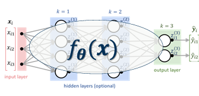
4.2.3 Computing Gradient-Based Saliency Maps
We now illustrate how gradient-based saliency maps are generated in practice. The goal is to determine which pixels most influence the prediction for a chosen class.
4.2.3.1 Step 1: Forward Pass
An input image is first passed through the neural network to compute class probabilities. For example, suppose the network outputs
\[\hat{y} = \begin{bmatrix} 0.05 & 0.10 & 0.85 \end{bmatrix},\]
where the highest probability corresponds to the class Dog. This predicted class becomes the target for saliency analysis.
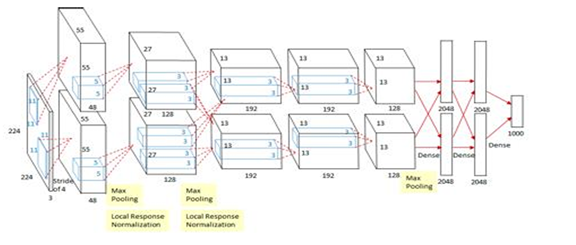
4.2.3.2 Step 2: Backward Pass
Next, we compute the gradient of the selected class score with respect to the input image:
\[\frac{\partial \hat{y}_{\text{dog}}}{\partial x}.\]
This gradient measures how sensitive the predicted score is to small changes in each pixel. Pixels with large gradient magnitude have the strongest influence on the prediction.
In practice, this gradient is efficiently computed using backpropagation in a single backward pass through the network.
4.2.3.3 Step 3: Constructing the Saliency Map
To visualize the importance of each pixel, we compute the maximum absolute gradient across the RGB channels. The resulting saliency map highlights image regions that most strongly affect the class score. Bright regions in the map correspond to pixels that are most critical for the network’s decision.
4.2.3.4 Example Interpretation
Consider applying the gradient-based saliency procedure to several images from different classes. For each image, the network first predicts the most likely class and then computes the gradient of that class score with respect to the input pixels. The resulting saliency maps highlight the regions that most strongly influence the prediction.
For instance, in an image of a dog, the saliency map typically emphasizes the head, ears, and body contours rather than the background. Similarly, for objects such as boats or fruits, the highlighted regions correspond to the most distinctive visual features of the object. Across different examples, these maps consistently reveal that the network focuses on semantically meaningful structures rather than irrelevant background pixels.
This example interpretation demonstrates how gradient-based saliency provides an intuitive visual explanation of the model’s decision-making process.
4.3 Saliency Methods: Weakly-Supervised Segmentation
Saliency maps are not only useful for model interpretability but also serve as a practical tool for weakly-supervised semantic segmentation. In many real-world scenarios, obtaining pixel-level segmentation labels is expensive and time-consuming. Saliency maps provide an alternative by highlighting the regions of an image that most strongly influence the model’s prediction, offering a coarse localization of objects without requiring detailed annotations.
By computing gradients with respect to input pixels, the network identifies visually meaningful regions that correspond to objects or regions of interest. These highlighted regions can then be used as pseudo-labels to guide segmentation algorithms. Although the resulting segmentations may be coarse, they significantly reduce the need for fully labeled training data.
The visualizations below demonstrate how saliency-based segmentation reveals the network’s focus on different objects within an image, such as animals or foreground objects, while suppressing irrelevant background regions.
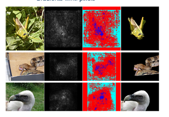
4.4 Uncovering Biases
Saliency maps are not only useful for understanding how a neural network makes a prediction, but also for diagnosing why it may fail. In practice, deep models often learn spurious correlations present in the training data instead of the true semantic concepts we intend them to learn. Saliency visualization provides a powerful tool for uncovering these hidden biases by revealing which pixels most strongly influence a model’s decision.
A classic example involves training a classifier to distinguish wolves from dogs. Suppose that many wolf images in the training dataset contain snow in the background, while most dog images do not. Instead of learning the visual characteristics of wolves (such as facial structure or fur patterns), the model may learn that snow is a strong indicator of the “wolf” class. As a result, when the network encounters an image of a husky standing in snow, it may confidently misclassify the dog as a wolf.
Figure [fig:wolf] shows an example of such a failure case. The model predicts the class wolf for a husky image. However, the corresponding saliency map in Figure 10 reveals that the highest gradient magnitudes are concentrated on the snowy background rather than the animal itself. This indicates that the model is relying on contextual background cues instead of the object of interest. In other words, the classifier has unintentionally become a snow vs. no-snow classifier rather than a true wolf vs. dog classifier.
This example highlights an important role of explainability methods in machine learning: they help practitioners detect dataset bias, diagnose model weaknesses, and guide improvements in data collection and model design. By revealing when a model is focusing on the wrong features, saliency methods provide actionable insights for building more robust and trustworthy systems.
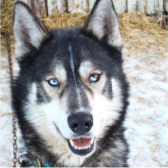
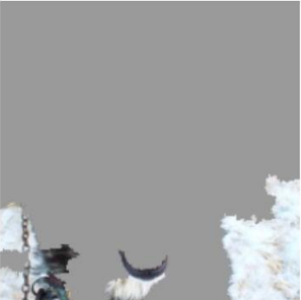
5. Gradient-Based Explanations
Gradient-based explanations provide insights into neural network decisions by identifying which parts of the input image most influence the model’s output. These methods rely on gradients computed during backpropagation to estimate how sensitive the prediction is to each input pixel. The resulting saliency maps visually highlight regions that strongly affect the output score.
A key advantage of gradient-based methods is their computational efficiency. Unlike occlusion-based approaches, which require repeatedly evaluating the model on modified inputs, gradients can be computed in a single backward pass. However, these explanations are only a local linear approximation of a highly non-linear model and therefore may not perfectly reflect the true decision-making process. In addition, raw gradients can sometimes lack class discriminativity and may highlight edges or textures that are not uniquely associated with the predicted class.
5.1 Vanilla Backpropagation
Vanilla backpropagation is the most direct approach for generating saliency maps. Given an input image and a target class score, we compute the gradient of the score with respect to the input pixels. The magnitude of this gradient indicates how strongly small changes in each pixel would affect the prediction.
In practice, the resulting saliency maps can be noisy and difficult to interpret. One reason is the presence of non-linear activation functions such as ReLU. During the backward pass, gradients are propagated only through neurons with positive activations, while negative activations are suppressed. This selective propagation emphasizes features that positively contribute to the prediction, helping highlight regions that are most relevant to the model’s decision.
Although simple, vanilla backpropagation forms the foundation for many improved gradient-based visualization techniques that aim to produce clearer and more stable explanations.
5.2 Deconvnet Backpropagation
Deconvnet backpropagation is a modified gradient-based visualization method designed to produce clearer and more interpretable saliency maps than vanilla backpropagation. The key idea is to change how gradients are propagated through ReLU non-linearities during the backward pass.
5.2.1 Handling ReLU Non-linearities
Recall that in the forward pass of a ReLU layer, \[h^{l+1} = \max(0, h^l).\] In standard backpropagation, gradients are propagated through ReLU units based on whether the *forward activation* was positive. Deconvnet modifies this rule by allowing gradients to flow only through neurons that have positive activations, effectively suppressing contributions from inactive regions.
5.2.2 Backward Pass and Mathematical Formulation
During the backward pass, the gradient propagation rule becomes \[\Delta h^l = \mathbf{1}(h^l > 0)\,\Delta h^{l+1},\] where the indicator function \(\mathbf{1}(h^l > 0)\) ensures that gradients are zeroed out whenever the forward activation is negative. This rectification removes noisy gradient signals and focuses the visualization on features that positively contribute to the prediction.
5.2.3 Interpretation and Intuition
By restricting gradient flow to regions with positive activations, deconvnet backpropagation produces sharper and more localized saliency maps than vanilla backpropagation. In practice, this leads to clearer highlighting of edges, textures, and object parts that strongly activate the network. The reduction in noise makes the resulting explanations easier to interpret, representing an important step toward more refined gradient-based explanation techniques.
5.3 Forward and Backward Pass Details
Figure 11 illustrates how ReLU nonlinearities affect both the forward and backward passes of a neural network. Understanding this behavior is essential for interpreting gradient-based saliency methods, since these methods rely directly on the gradients propagated through the network.
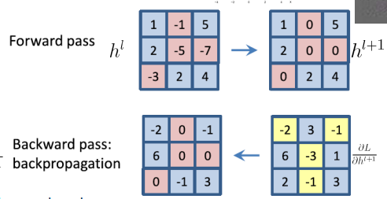
5.3.1 ReLU Nonlinearities and Backpropagation
During the forward pass, the ReLU activation function performs a simple element-wise operation that sets all negative activations to zero: \[h^{l+1} = \max(0, h^l).\] This operation introduces sparsity in the activations and allows the network to model non-linear relationships.
During the backward pass, this nonlinearity plays an equally important role in determining how gradients flow through the network. Because ReLU outputs zero for negative inputs, gradients are propagated only through neurons that were active during the forward pass. Mathematically, the gradient with respect to the previous layer is given by \[\frac{\partial L}{\partial h^l} = \mathbf{1}[h^l > 0] \cdot \frac{\partial L}{\partial h^{l+1}},\] where the indicator function \(\mathbf{1}[h^l > 0]\) blocks gradients at locations where the forward activation was negative. As a result, neurons that were inactive during the forward pass receive no gradient signal during backpropagation.
This gating behavior is crucial for saliency methods because it determines which spatial regions of the image can influence the gradient signal used to generate saliency maps.
5.3.2 Deconvnet Backpropagation
Deconvnet backpropagation modifies the standard backward pass by further restricting gradient flow. In addition to the forward-pass gating described above, this method propagates only *positive gradients* from the higher layer. Intuitively, this rectification step emphasizes features that positively contribute to the activation of the target class while suppressing noisy or irrelevant signals.
Formally, gradient propagation for layer \(l\) can be written as \[\frac{\partial L}{\partial h^l} = \mathbf{1}[h^l > 0] \cdot \frac{\partial L}{\partial h^{l+1}},\] with the additional constraint that only positive gradient values from the later layer are allowed to pass. This modification leads to sharper and more interpretable visualizations.
In practice, the combination of forward-pass gating and gradient rectification produces saliency maps that are significantly cleaner than those obtained with vanilla backpropagation. The resulting visualizations better highlight edges, textures, and object parts that strongly influence the network’s predictions.
5.4 Guided Backpropagation
Guided backpropagation further refines gradient-based saliency by combining the ideas of standard backpropagation and Deconvnet backpropagation. Recall that standard backpropagation allows gradients to pass only through neurons that were active during the forward pass, while Deconvnet backpropagation additionally restricts gradients to be positive. Guided backpropagation merges both constraints, allowing gradients to flow only when **both the forward activation and the backward gradient are positive**.
During the forward pass, the ReLU activation behaves as usual: \[h^{l+1} = \max\{0, h^l\}.\] However, during the backward pass, the gradient propagation rule becomes more restrictive: \[\frac{\partial L}{\partial h^l} = \mathbf{1}[h^l > 0]\; \mathbf{1}\!\left[\frac{\partial L}{\partial h^{l+1}} > 0\right] \frac{\partial L}{\partial h^{l+1}}.\]
This equation shows that gradient signals are allowed to pass only when two conditions are satisfied:
The neuron was positively activated during the forward pass.
The gradient coming from the higher layer is positive.
By enforcing both constraints simultaneously, guided backpropagation suppresses noisy gradient signals and emphasizes features that positively contribute to the target class. In practice, this produces sharper and more visually interpretable saliency maps than either vanilla backpropagation or Deconvnet backpropagation. The resulting visualizations often highlight fine-grained structures such as edges, textures, and object boundaries, making guided backpropagation one of the most widely used gradient-based explanation techniques.
5.5 Vanilla vs. Deconvnet vs. Guided Backpropagation
The three gradient-based visualization methods discussed so far differ primarily in how they handle gradient flow through ReLU nonlinearities during the backward pass. These differences directly affect the quality and interpretability of the resulting saliency maps.
Vanilla backpropagation allows gradients to pass through ReLU units only when the corresponding neuron was active during the forward pass. Although this produces useful feature-importance maps, the resulting visualizations are often noisy and diffuse, making it difficult to clearly identify the most important image regions.
Deconvnet backpropagation improves upon this by additionally restricting gradients to be positive during the backward pass. This suppresses many irrelevant signals and produces sharper and more localized saliency maps that better highlight edges, textures, and object parts.
Guided backpropagation combines both constraints: gradients are allowed to flow only when the forward activation is positive and the backward gradient is positive. This dual rectification removes a large portion of the noise present in earlier methods, typically producing the cleanest and most visually interpretable saliency maps among the three approaches.
Overall, these methods illustrate how small changes in gradient propagation rules can significantly improve the clarity of neural network explanations.
5.6 Problems with Guided Backpropagation
Although guided backpropagation produces visually appealing and sharp saliency maps, it has several important limitations. In particular, the method often lacks class discriminativity and may highlight image structures that are not truly responsible for the model’s prediction.
5.6.0.1 Issue 1: Lack of class discriminativity
A key limitation is that guided backpropagation does not reliably distinguish between different output classes. In practice, saliency maps generated for different classes can appear surprisingly similar, even when the predicted categories are very different.
For example, consider generating guided backpropagation maps for the classes “airliner” and “bus”. Ideally, the explanation for each class should highlight class-specific features such as wings for airplanes or wheels and windows for buses. However, guided backpropagation often highlights generic edges, textures, and contours that appear in both images. This suggests that the method is emphasizing low-level image structure rather than class-specific semantic features.
This observation indicates that guided backpropagation is not always tightly coupled to the network’s final decision-making process. Instead, it often behaves like a generic edge detector influenced by the network’s learned filters.
5.6.0.2 Issue 2: Noise and ambiguity in class-specific saliency
Another limitation is that gradient-based saliency maps can still be noisy and difficult to interpret. Even when guided backpropagation improves visual sharpness, it may fail to clearly differentiate between similar classes.
Consider saliency maps generated for images of a cat and a dog. Vanilla backpropagation typically produces noisy maps that highlight many irrelevant regions. Guided backpropagation reduces some of this noise, but the resulting maps may still highlight similar edges and textures in both images. As a result, the explanations may not clearly indicate why the network prefers one class over another.
Figure 12 illustrates this phenomenon: saliency maps for different classes often look visually similar, revealing that the method does not strongly encode class-specific reasoning.
These limitations motivate the development of more advanced techniques (such as Grad-CAM) that explicitly incorporate class information when generating explanations.
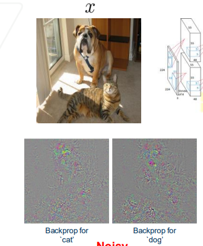
5.7 Summary of Saliency Maps
Saliency methods can be broadly divided into two categories: intervention-based methods and gradient-based methods. Although both aim to identify which parts of an input most influence a model’s prediction, they differ significantly in methodology and computational cost.
5.7.1 Intervention-Based Methods
Intervention-based methods estimate feature importance by explicitly perturbing pixels (or regions) of the input and observing how the model’s output changes. By measuring the impact of each modification, these approaches provide an intuitive and often reliable estimate of which regions are critical for prediction.
However, this direct strategy comes with substantial drawbacks. Because each perturbation requires a separate forward pass through the network, these methods are computationally expensive. In practice, generating high-resolution saliency maps may require many iterative perturbations, making them slow and difficult to scale.
Gradient-Based Methods
Gradient-based methods take a different approach by approximating feature importance using backpropagation. Instead of repeatedly modifying the input, these methods compute the gradient of the output with respect to the input in a single backward pass. This makes them significantly more computationally efficient than intervention-based approaches.
While gradient-based methods are fast and easy to implement, they rely on local linear approximations and may suffer from noise or lack of class discriminativity. Nevertheless, their efficiency and simplicity make them widely used in practice, especially for large-scale models.
Overall, the trade-off between intervention-based and gradient-based saliency methods reflects a broader theme in explainability: accuracy and interpretability often come at the cost of computational efficiency.
6. Gradient-Based Class Activation Map (Grad-CAM)
6.1 Motivation
Pixel-level saliency maps highlight regions that influence a prediction, but they often suffer from noise and poor class discriminativity. Grad-CAM was introduced to produce class-specific visual explanations that are both interpretable and spatially meaningful.
The objective of Grad-CAM is to identify which internal feature maps in a convolutional neural network are most responsible for predicting a particular class. For these explanations to be useful, the resulting activations must satisfy two key requirements. First, they must be class-discriminative, meaning that the highlighted regions directly reflect the network’s reasoning for a chosen class. Second, they must preserve spatial information, so that the explanation can be mapped back onto the original image and interpreted visually.
A key design decision is the choice of network layer to analyze. Early convolutional layers retain high spatial resolution but capture only low-level features such as edges and textures. Fully connected layers capture high-level semantics but discard spatial structure. The last convolutional layer provides the ideal compromise: it encodes rich semantic information while still maintaining coarse spatial structure. Grad-CAM therefore operates on this layer to produce meaningful localization maps.
6.2 Method
Grad-CAM computes a class-specific heatmap by combining feature maps using weights derived from gradients of the target class score.
Forward Pass
Input an image into the CNN.
Extract feature maps \(A^k\) from the last convolutional layer.
Compute the class score \(y^c\) (logit) for the target class \(c\).
Backward Pass (Class-Specific Gradients)
Backpropagate gradients from the class score \(y^c\) to the last convolutional layer.
Compute importance weights for each feature map: \[\alpha_k^c = \frac{1}{Z}\sum_i\sum_j \frac{\partial y^c}{\partial A_{ij}^k},\] where \(Z\) is the number of spatial locations.
Compute the Class Activation Map \[L_{\text{Grad-CAM}}^c = \mathrm{ReLU}\left(\sum_k \alpha_k^c A^k\right).\] This produces a coarse heatmap highlighting regions that positively influence the class prediction.
Visualization
Upsample the heatmap to the input image resolution.
Overlay the heatmap on the original image.
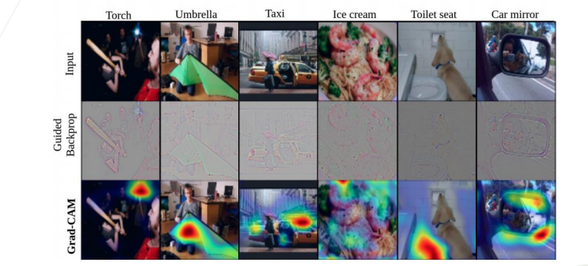

Together, these steps allow Grad-CAM to connect internal feature representations to human-interpretable image regions. Compared to Guided Backpropagation, which often highlights edges and textures, Grad-CAM focuses on high-level semantic regions responsible for the prediction.
6.3 Interpretation and Practical Insights
Grad-CAM provides clearer and more class-discriminative explanations than gradient-only saliency methods. In practice, Guided Backpropagation often highlights fine edges and textures throughout the image, including background details that are not directly responsible for the model’s prediction.
Grad-CAM, in contrast, focuses on semantic regions that contribute most strongly to the predicted class. This difference makes Grad-CAM particularly useful for understanding where the network is looking when making a decision, rather than simply which pixels produce large gradients.
This property makes Grad-CAM an effective tool for debugging models, detecting failure modes, and building trust in neural network predictions.